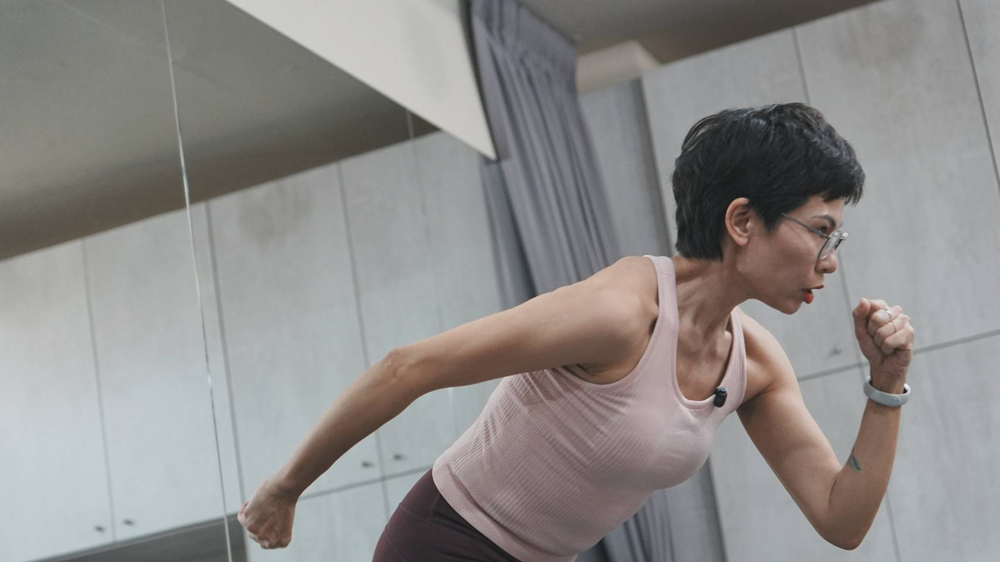

— 01
身形變化
腰間變厚、褲子變緊，卻不知道從哪裡開始改變
— 02
執行困難
知道方法卻撐不久，意志力常常在第三天崩潰
— 03
反覆循環
瘦了又胖、胖了再瘦，感覺永遠在原地打轉

體重管理不只是意志力，而是讓身體、飲食與生活回到適合你的節奏。
從認識自己的身體開始，逐步建立飲食、作息、運動的完整節奏。
不需要完美基礎，只需要一個真心想改變的念頭。
試過很多方法，卻總是維持不久的人
外食比例高、生活忙碌、作息不規律的人
不想靠極端節食，想用穩定方式調整的人
想真正學會方法，而非只想短期瘦一下的人
可補充：服務族群、報名前須知、是否提供諮詢或體驗流程等說明內容。

「很多人卡住，並不是不努力，而是生活方式沒有被重新建立。」
當飲食、作息與身體節奏沒有協調，體重自然難以穩定。我專注在協助學員從生活中調整體質與習慣，讓體重管理變成一件可以長期維持的事。